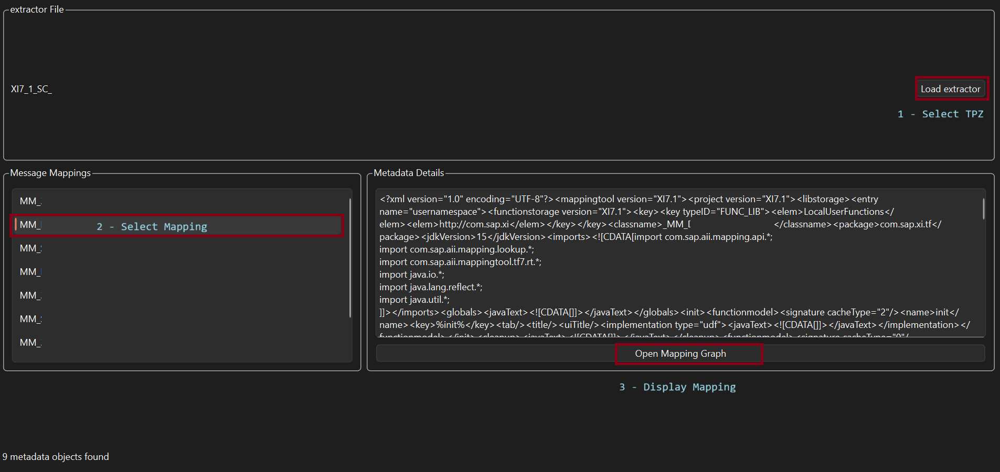
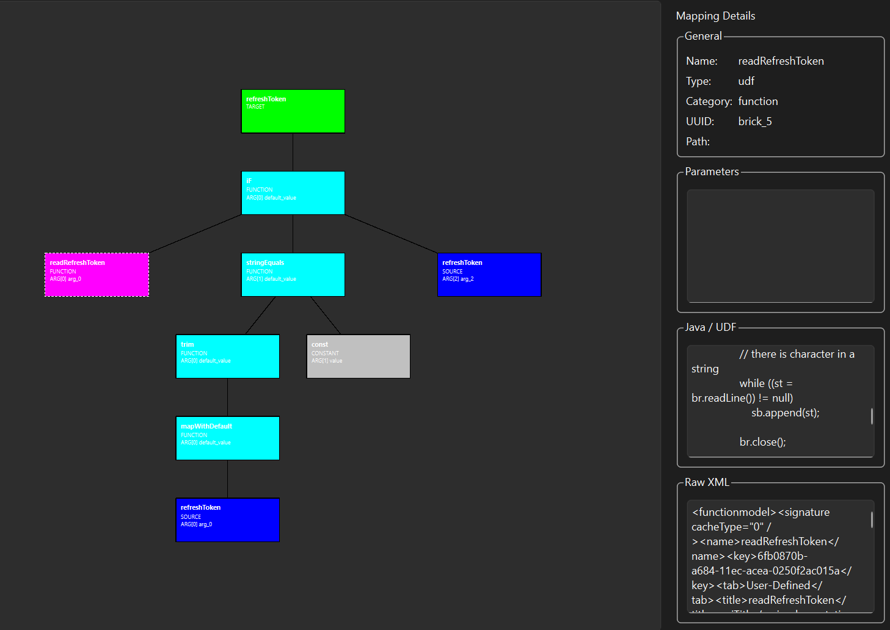

Getting started
Your first mapping inspection.
Start with one TPZ export and one mapping you already understand.
1. Prepare a sample
Choose a TPZ export containing a message mapping you are authorized to inspect. For a public walkthrough, use a synthetic or anonymized example.
2. Install the application
Clone the repository and install the required dependencies. Python and Git must be installed on your computer.
git clone https://gitlab.com/alp.mustf/opentpzmaster.git
cd open-tpz-master
python -m venv .venvWindows — PowerShell
.\.venv\Scripts\Activate.ps1
python -m pip install -r requirements.txt
python main.pyLinux / macOS
source .venv/bin/activate
python -m pip install -r requirements.txt
python main.py3. Open the TPZ export
Load the export in the application and locate the message mapping you want to inspect. Start with a small, familiar mapping to make the initial review easier.

4. Inspect one target field
Follow its displayed brick tree. Identify the source fields, functions and conditions visible in the mapping. Record anything you cannot explain from the view alone.

5. Compare and document
Compare your interpretation with the original mapping and known examples. The graph is an inspection aid; it does not establish runtime behavior or replace end-to-end validation.
Examples & tutorials
When something is missing
Check that you selected the intended export and mapping. Record the application version, the affected object and the observed behavior. Share only a permitted, minimal example when requesting help.